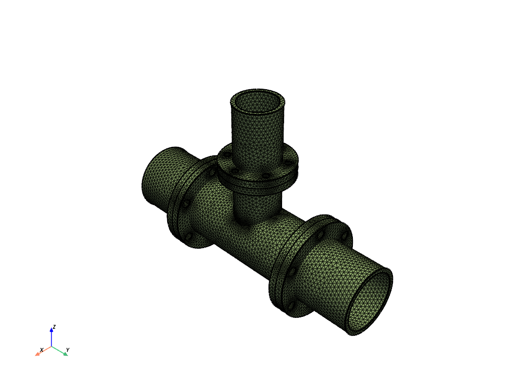

Note
Go to the end to download the full example code
Meshing a pipe T-section for structural thermal and fluid flow analysis#
Summary: This example demonstrates how to mesh a pipe T-section for both structural thermal and fluid flow simulation.
Objective#
This example meshes the solids of a pipe T-section for a structural thermal analysis using tetrahedral elements and uses the wrapper to extract the fluid domain and mesh using polyhedral cells with prismatic boundary layers.
{kind=link}
Thermal structural and fluid flow meshes#
Procedure#
Launch an Ansys Prime Server instance and connect the PyPrimeMesh client.
Read the CAD geometry.
Mesh for the structural thermal analysis.
Write the mesh for the structural thermal analysis.
Extract the fluid by wrapping.
Mesh with polyhedral and prisms.
Write the mesh for the fluid simulation.
Launch Ansys Prime Server#
Import all necessary modules.
Launch the Ansys Prime Server instance and connect the client.
Get the client model and instantiate meshing utilities from the lucid class.
import os
import tempfile
import ansys.meshing.prime.graphics as graphics
from ansys.meshing import prime
from ansys.meshing.prime import lucid
prime_client = prime.launch_prime()
model = prime_client.model
mesh_util = lucid.Mesh(model)
Read CAD geometry#
Download the example FMD geometry file.
The FMD file format is exported from SpaceClaim and is compatible with Linux.
Read and display the geometry file.
The file contains several unmeshed parts, which is what you would get after you
import from a CAD file.
For Windows OS users, the SCDOC format is also available:
pipe_tee = prime.examples.download_pipe_tee_scdoc()
Part Summary:
Part Name: solid_coupling_out
Part ID: 2
18 Topo Edges
12 Topo Faces
1 Topo Volumes
0 Edge Zones
Edge Zone Name(s) : []
0 Face Zones
Face Zone Name(s) : []
1 Volume Zones
Volume Zone Name(s) : [solid_coupling_out]
1 Label(s)
Names: [out]
Bounding box (-127 -360.99 -127)
(127 -184.15 127)
Part Name: solid_coupling_in1
Part ID: 3
18 Topo Edges
12 Topo Faces
1 Topo Volumes
0 Edge Zones
Edge Zone Name(s) : []
0 Face Zones
Face Zone Name(s) : []
1 Volume Zones
Volume Zone Name(s) : [solid_coupling_in1]
1 Label(s)
Names: [in1]
Bounding box (-127 184.15 -127)
(127 356.616 127)
Part Name: solid_tee
Part ID: 4
50 Topo Edges
31 Topo Faces
1 Topo Volumes
0 Edge Zones
Edge Zone Name(s) : []
0 Face Zones
Face Zone Name(s) : []
1 Volume Zones
Volume Zone Name(s) : [solid_tee]
0 Label(s)
Names: []
Bounding box (-127 -184.15 -127)
(127 184.15 203.2)
Part Name: solid_coupling_in2
Part ID: 5
18 Topo Edges
12 Topo Faces
1 Topo Volumes
0 Edge Zones
Edge Zone Name(s) : []
0 Face Zones
Face Zone Name(s) : []
1 Volume Zones
Volume Zone Name(s) : [solid_coupling_in2]
1 Label(s)
Names: [in2]
Bounding box (-95.25 -95.25 203.2)
(95.25 95.25 374.65)
Part Name: cap_out
Part ID: 6
1 Topo Edges
1 Topo Faces
0 Topo Volumes
0 Edge Zones
Edge Zone Name(s) : []
1 Face Zones
Face Zone Name(s) : [cap_out]
0 Volume Zones
Volume Zone Name(s) : []
1 Label(s)
Names: [outlet_main]
Bounding box (-76.2 -360.99 -76.2)
(76.2 -360.99 76.2)
Part Name: cap_in2
Part ID: 7
1 Topo Edges
1 Topo Faces
0 Topo Volumes
0 Edge Zones
Edge Zone Name(s) : []
1 Face Zones
Face Zone Name(s) : [cap_in2]
0 Volume Zones
Volume Zone Name(s) : []
1 Label(s)
Names: [in2_inlet]
Bounding box (-51.308 -51.308 374.65)
(51.308 51.308 374.65)
Part Name: cap_in1
Part ID: 8
1 Topo Edges
1 Topo Faces
0 Topo Volumes
0 Edge Zones
Edge Zone Name(s) : []
1 Face Zones
Face Zone Name(s) : [cap_in1]
0 Volume Zones
Volume Zone Name(s) : []
1 Label(s)
Names: [in1_inlet]
Bounding box (-76.2 356.616 -76.2)
(76.2 356.616 76.2)
Mesh for structural#
Surface mesh using curvature sizing. Volume mesh with tetrahedral elements. Delete unwanted capping surface geometries by deleting parts that do not have any volume zones. Display structural thermal mesh ready for export.
Write structural mesh#
Labels are exported to the CDB file as components for applying load boundary conditions in the solver.
with tempfile.TemporaryDirectory() as temp_folder:
structural_mesh = os.path.join(temp_folder, "pipe_tee.cdb")
mesh_util.write(structural_mesh)
print("\nExported Structural Mesh: ", structural_mesh)
Exported Structural Mesh: /tmp/tmphrtlmmc7/pipe_tee.cdb
Extract fluid by wrapping#
You can deal with the small internal diameter change between flanges in several ways:
Connect the geometry to extract a volume and refine the mesh around this detail to capture.
Modify the geometry to remove the feature.
Wrap to extract the internal flow volume and walk over the feature.
This example wraps and walks over these features.
Read in the geometry again.
Use a constant size wrap to walk over the diameter change feature and extract the largest internal volume as the fluid.
By default, the wrap uses all parts as input and deletes the input
geometry after wrapping unless keep_input is set as True.
mesh_util.read(pipe_tee)
wrap = mesh_util.wrap(min_size=6, region_extract=prime.WrapRegion.LARGESTINTERNAL)
print(model)
display()
Part Summary:
Part Name: __wrap__
Part ID: 9
1 Edge Zonelets
8 Face Zonelets
0 Cell Zonelets
0 Edge Zones
Edge Zone Name(s) : []
3 Face Zones
Face Zone Name(s) : [cap_out, cap_in2, cap_in1]
1 Volume Zones
Volume Zone Name(s) : [unreferenced]
13 Label(s)
Names: [___geom_features___, __extracted__features__, cap_in1, cap_in2, cap_out, in1_inlet, in2_inlet, outlet_main, solid_coupling_in1, solid_coupling_in2, solid_coupling_out, solid_tee, unreferenced]
Bounding box (-126.979 -360.99 -126.996)
(126.996 356.616 374.65)
Volume mesh fluid#
Create zones for each label to use for boundary condition definitions. Volume mesh with prism polyhedral, not growing prisms from inlets and outlets. Visualize the generated volume mesh. When displaying, you can avoid displaying unnecessary edge zones. You can clearly see the prism layers that were specified by the Prism control.
# set global sizing
params = prime.GlobalSizingParams(model, min=6, max=50)
model.set_global_sizing_params(params)
mesh_util.create_zones_from_labels("outlet_main,in1_inlet,in2_inlet")
mesh_util.volume_mesh(
prism_layers=5,
prism_surface_expression="* !*inlet* !*outlet*",
volume_fill_type=prime.VolumeFillType.POLY,
)
print(model)
display(update=True, scope=prime.ScopeDefinition(model=model, label_expression="* !*__*"))
Part Summary:
Part Name: __wrap__
Part ID: 9
1 Edge Zonelets
8 Face Zonelets
1 Cell Zonelets
0 Edge Zones
Edge Zone Name(s) : []
6 Face Zones
Face Zone Name(s) : [cap_out, cap_in2, cap_in1, in1_inlet, in2_inlet, outlet_main]
1 Volume Zones
Volume Zone Name(s) : [unreferenced]
13 Label(s)
Names: [___geom_features___, __extracted__features__, cap_in1, cap_in2, cap_out, in1_inlet, in2_inlet, outlet_main, solid_coupling_in1, solid_coupling_in2, solid_coupling_out, solid_tee, unreferenced]
Bounding box (-126.979 -360.99 -126.996)
(126.996 356.616 374.65)
Write fluid mesh#
Write a MSH file for the Fluent solver.
with tempfile.TemporaryDirectory() as temp_folder:
fluid_mesh = os.path.join(temp_folder, "pipe_tee.msh")
mesh_util.write(fluid_mesh)
assert os.path.exists(fluid_mesh)
print("\nExported Fluid Mesh: ", fluid_mesh)
Exported Fluid Mesh: /tmp/tmp7qfik17c/pipe_tee.msh
Exit PyPrimeMesh#
prime_client.exit()
Total running time of the script: (0 minutes 56.077 seconds)